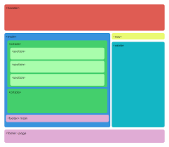

Eiquetas semanticas
¿Que son etiquetas semanticas?
Etiquetas semanticas estructurales
Etiquetas semanticas
Las etiquetas semánticas no definen un estilo predeterminado
Por qué debemos utilizar las etiquetas semánticas y cómo nos ayudan
Conclusión
